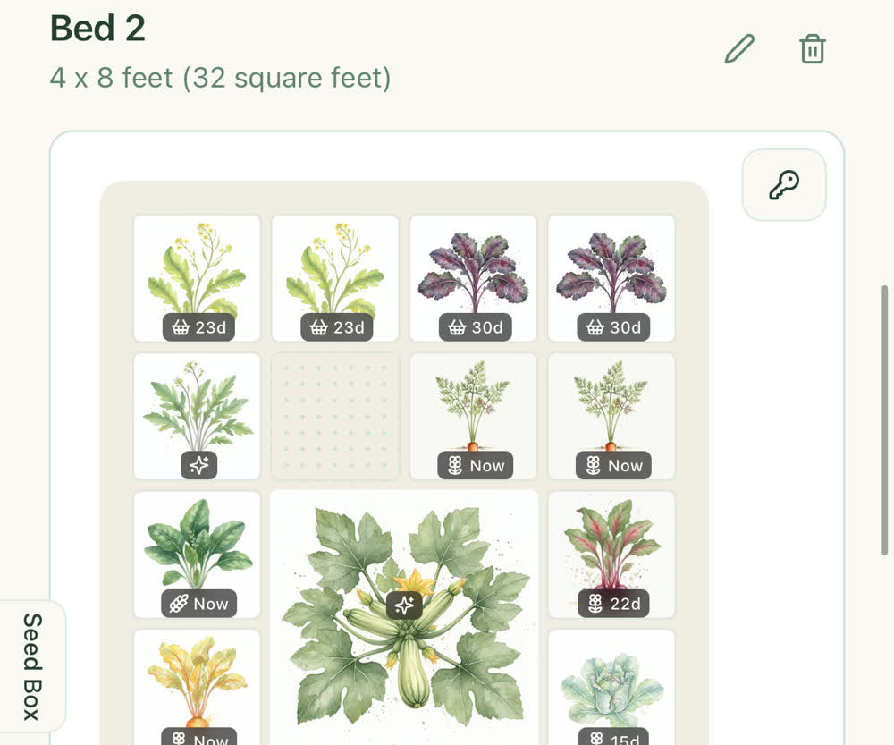
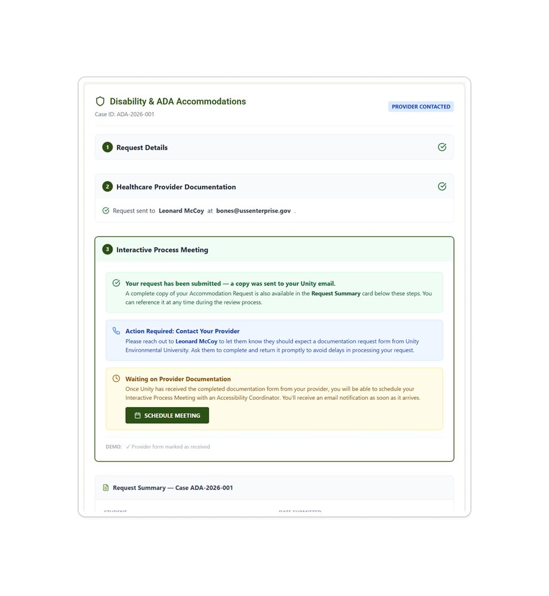
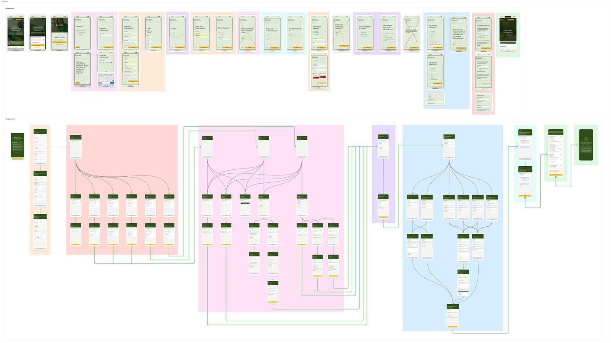
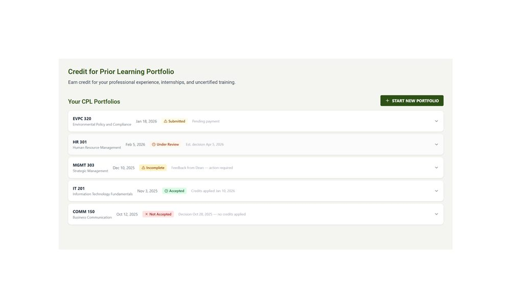

Portfolio
Case Studies
Deep dives into discovery, design decisions, and reflection — from a solo-built consumer app to multi-stakeholder university platform features.

Solo Product
GrowWise
A companion-planting and square-foot gardening planner designed, built, and shipped independently — from first sketch to the App Store.

0 → 1 Feature
Unity ADA Accommodations
Redesigning a paper-and-email process into a single-screen digital workflow integrated with Salesforce, Adobe Sign, and FERPA compliance.

Feature Redesign
Unity Admissions Application
Turning a static 18-step form into a dynamic, conditional 7-stage flow that only asks applicants what it actually needs to know.

0 → 1 Feature
Unity CPL Portfolio
Replacing a fragmented, email-driven credit process with a fully guided three-step portfolio workflow, from course search to payment.
Built & Live
Tools
Standalone tools and reference material — a general UX design process reference, and a civic budgeting tool for exploring federal tax and spending tradeoffs.
Design Process
A full lifecycle reference map — from discovery through post-launch measurement — documenting where and why design leads, informs, or collaborates at each phase.
View reference →
The People's Ledger
An interactive civic budgeting tool — set taxes, redirect spending, and fund programs to explore federal budget tradeoffs with real, cited data.
Open tool ↗